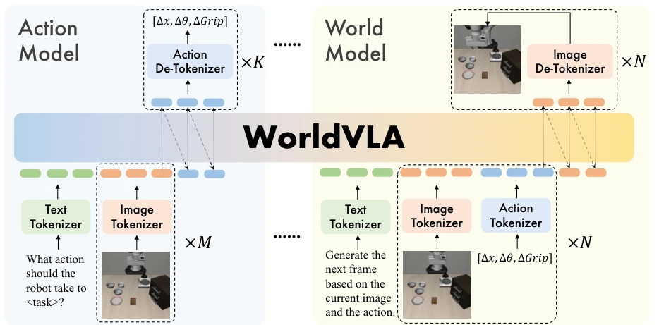
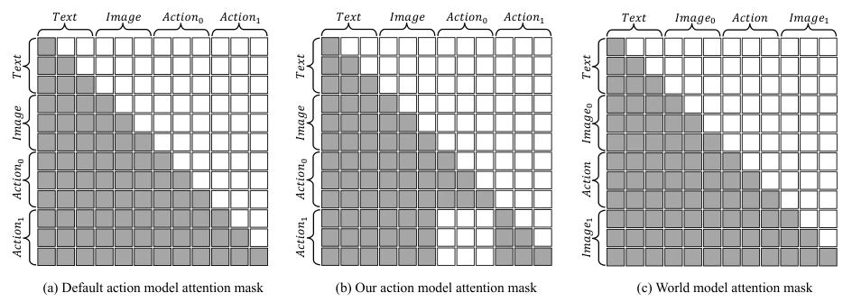
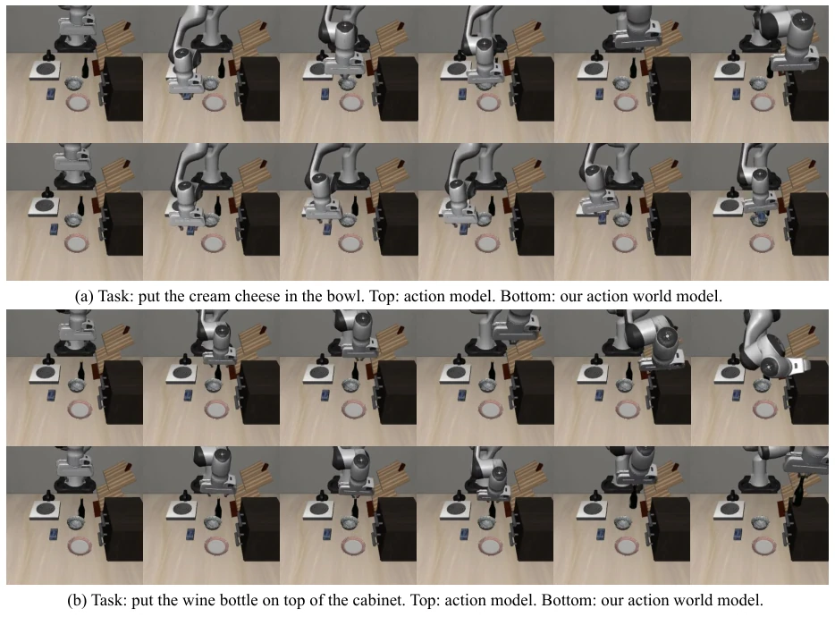
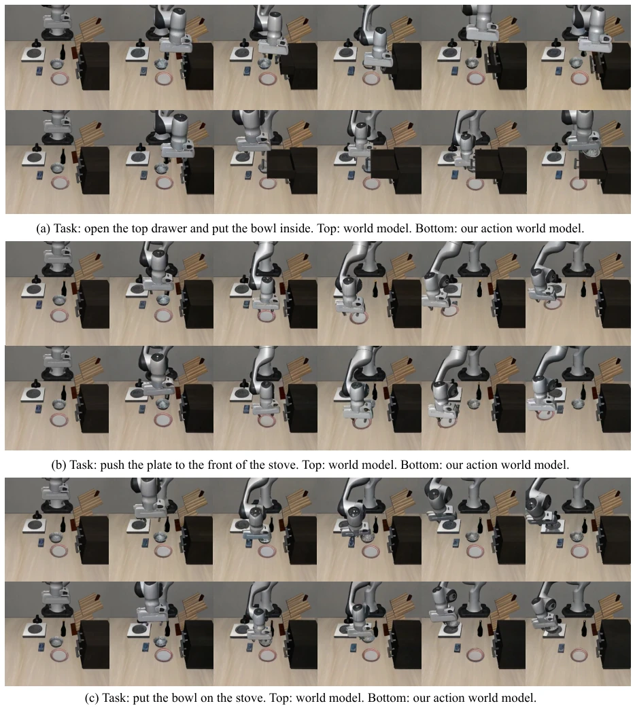
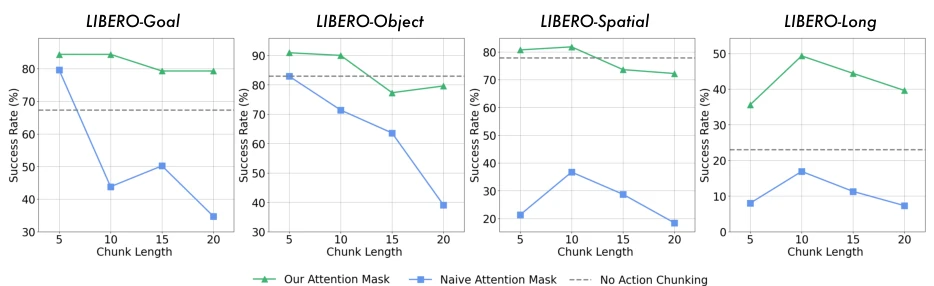
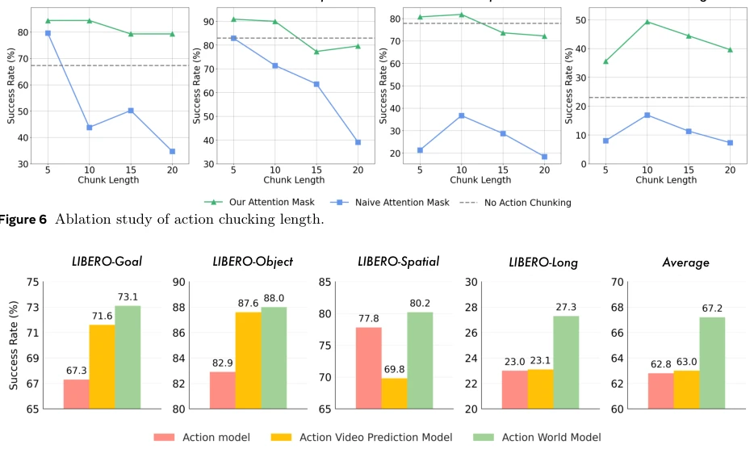

This paper combines VLA and world models somewhat arbitrarily to create WorldVLA. In essence, it aims to enable robots to both "think" (world models predict the future) and "act" (VLA generates actions). The authors are quite candid, directly acknowledging that errors accumulate during autoregressive generation of action sequences, and thus devised an attention masking strategy to "mask" previous actions, preventing subsequent actions from collapsing if the preceding one was erroneous. Although the architecture resembles a nested Chameleon structure, it indeed outperforms OpenVLA on LIBERO. However, autoregressive action generation itself is rather esoteric in the robotics field, characterized by low efficiency and susceptibility to collapse; their masking strategy serves as a patch, and it remains uncertain whether it can withstand more complex tasks. Overall, it is a top performer among "patchwork models", but it is still far from true general embodied intelligence, given that action discretization inevitably incurs information loss.
研究动机Motivation
现有 VLA 模型（如 OpenVLA, pi0）虽然能生成动作，但往往把动作仅视为输出，缺乏对动作本身的深度理解（Brohan et al., 2023; Kim et al., 2024）。而世界模型（World Models）擅长预测未来视觉状态，却难以直接输出动作规划（Ha and Schmidhuber, 2018）。两者功能割裂，导致机器人既不懂物理动态，又无法直接执行。此外，自回归生成动作序列时，早期预测错误会传播到后续动作，导致性能急剧下降（Kim et al., 2025）。本文旨在统一动作与图像的理解生成，并通过注意力掩码解决误差累积问题，实现更鲁棒的具身决策。
Existing VLA models (e.g., OpenVLA, pi0) can generate actions but often treat actions merely as outputs, lacking deep understanding of the actions themselves (Brohan et al., 2023; Kim et al., 2024). World Models are good at predicting future visual states but struggle to directly output action planning (Ha and Schmidhuber, 2018). The functional separation of the two leads to robots neither understanding physical dynamics nor being able to execute directly. Furthermore, during autoregressive generation of action sequences, early prediction errors propagate to subsequent actions, causing performance to drop sharply (Kim et al., 2025). This paper aims to unify the understanding and generation of actions and images, and solve the error accumulation problem through attention masking, achieving more robust embodied decision-making.

Figure 2 Overview of WorldVLA. WorldVLA integrates two distinct but complementary functional components: an action model and a world model. The action model is responsible for generating actions conditioned on both textual and visual data. The world model functions to predict the subsequent environmental state (e.g., the next visual frame) by leveraging textual information, current image, and current action.
方法Method
WorldVLA 基于 Chameleon 架构，采用三个独立的 Tokenizer（Image VQ-GAN, Text BPE, Action Discretized）将多模态数据统一为离散 Token，共享词表。整体框架包含动作模型（Image+Text -> Action）和世界模型（Image+Action -> Next Image）两个互补组件。训练时混合两类数据，损失函数加权平衡。核心创新在于动作注意力掩码策略：在生成当前动作时，屏蔽对历史动作的注意力，仅依赖视觉和文本输入，从而阻断误差传播，实现动作块（Action Chunk）的并行生成。世界模型部分仍保留因果掩码以预测下一帧。这种设计使得模型既能通过世界模型学习物理规律辅助决策，又能通过动作模型提升视觉理解能力，形成双向增强。
WorldVLA is based on the Chameleon architecture, employing three independent Tokenizers (Image VQ-GAN, Text BPE, Discretized Actions) to unify multimodal data into discrete Tokens with a shared vocabulary. The overall framework includes two complementary components: an action model (Image+Text -> Action) and a world model (Image+Action -> Next Image). During training, both types of data are mixed, and the loss function is weighted for balance. The core innovation lies in the action attention masking strategy: when generating the current action, attention to historical actions is masked, relying only on visual and text inputs, thereby blocking error propagation and enabling parallel generation of Action Chunks. The world model part retains causal masking to predict the next frame. This design allows the model to learn physical laws via the world model to assist decision-making, while improving visual understanding capabilities through the action model, forming a bidirectional enhancement.

Figure 3 Attention mask mechanism of (a) default action model, (b) our proposed action model, and (c) world model.

Figure 4 Visualization of action model. Top: action model. Bottom: our action world model.
Tested on the LIBERO benchmark, comparing with baselines such as OpenVLA and Diffusion Policy. Results show that WorldVLA outperforms the discrete action model OpenVLA in grasp success rate (average improvement of about 5% at 512x512 resolution). Ablation studies indicate that introducing world model data significantly improved the action model performance (Table 3), and vice versa. Regarding action chunk generation, the proposed attention masking strategy effectively alleviated the problem of success rate decline caused by long sequence generation (Fig 6). Furthermore, compared to pure video prediction models, the world model with action conditions performed better in both video generation quality (FVD) and action success rate.

Figure 5 Visualization of world model. Top: world model. Bottom: our action world model.

Figure 6 Ablation study of action chucking length.

Figure 7 Comparison between action world model and action video prediction model.